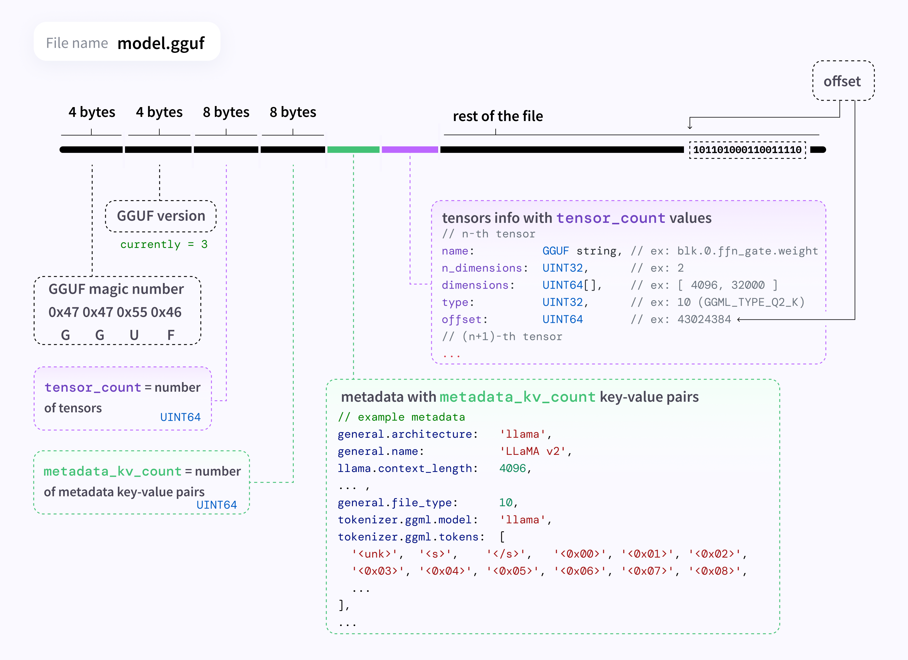

什么是 GGUF
by @karminski-牙医

GGUF（GGML Universal File）是一种专为大型语言模型（LLM）设计的文件格式。它旨在解决大型模型在实际应用中遇到的存储效率、加载速度、兼容性和扩展性等问题，从而简化 LLM 的使用和部署。
GGUF 的主要特点和优势
- 高效存储： GGUF 格式优化了数据的存储方式，减少了存储空间的占用，这对于包含大量参数的大型模型尤为重要。它采用紧凑的二进制编码格式和优化的数据结构来高效地保存模型参数（权重和偏差）。
- 单文件部署： 它们可以轻松分发和加载，加载模型所需的所有信息都包含在模型文件中，不需要任何外部文件来获取附加信息。
- 快速加载： GGUF 格式支持快速加载模型数据（使用
mmap），这对于需要即时响应的应用场景非常有用，例如在线聊天机器人或实时翻译系统。 - 跨平台兼容性： GGUF 兼容多种编程语言，例如 Python 和 R，非常方便在不同平台和环境中使用。大部分语言都可以使用少量代码轻松加载和保存模型，无需外部库。
- 支持微调： GGUF 支持微调，允许用户根据特定的应用场景调整 LLM，并存储跨应用部署模型的提示模板。
- 取代 GGML： GGUF 是 GGML 的替代者。GGML 由于在灵活性和扩展性方面存在一些限制，已被弃用，由 GGUF 取代。
GGUF 的应用
GGUF 格式的模型文件可以用于各种应用场景，例如：
- 本地部署 LLM： GGUF 格式使得在消费级计算机硬件（包括 CPU 和 GPU）上运行 LLM 成为可能。
- 移动设备上的 LLM 推理： 由于其高效的存储和加载特性，GGUF 也适用于在移动设备上进行 LLM 推理。
- 快速原型开发： GGUF 使得开发者可以更快速地加载和测试不同的 LLM 模型。
总而言之，GGUF 是一种重要的 LLM 文件格式，它通过提高存储效率、加载速度和兼容性，简化了 LLM 的使用和部署，并有望成为未来大模型文件标准格式之一。